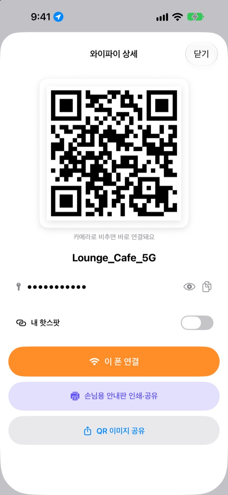
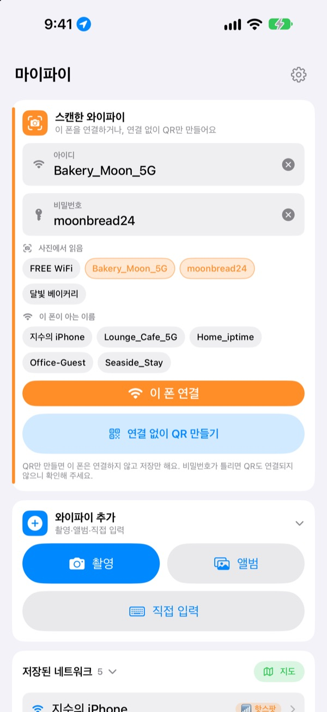
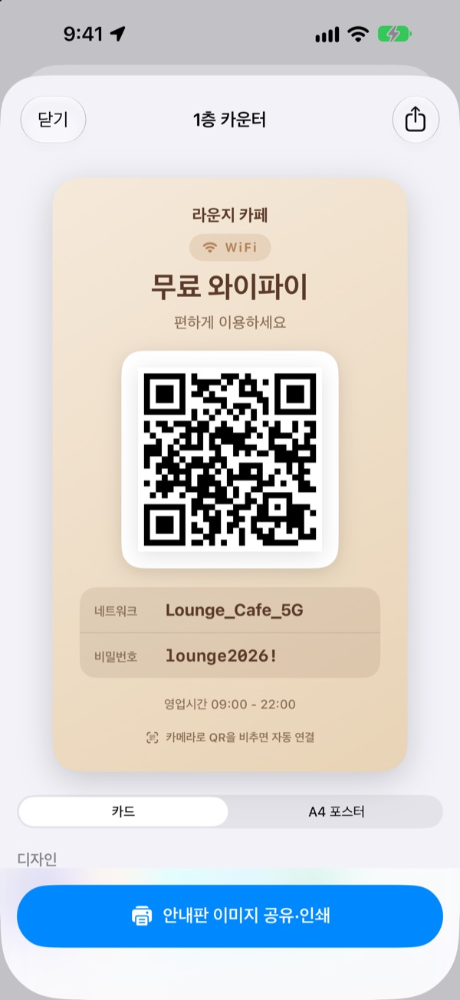
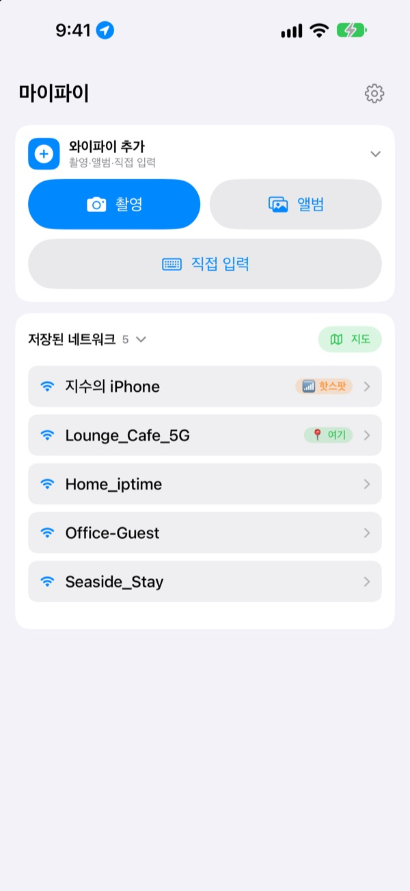

비밀번호 대신
QR 한 장이면 돼요
친구는 카메라로 비추기만 하면 연결돼요. 카페 벽의 안내판은 사진 한 장 찍으면 이 폰이 연결되고요. 받아 적다 틀리는 일이 사라져요.
모든 기능이 무료예요. iPhone, iOS 17 이상.

내 와이파이 QR을 만들어 보세요
이름과 비밀번호를 바꾸면 안내판이 바로 바뀌어요. 휴대폰 카메라로 비추면 진짜로 연결 제안이 떠요.
"비밀번호가 뭐였죠?" 오늘만 몇 번째인가요?
손님에게 비밀번호를 불러 주다 대소문자를 틀리고, 카페 벽의 안내문을 옮겨 적다 0과 O를 헷갈리고, 같은 설명을 또 반복해요. 마이파이는 그 반복을 사진 한 장과 QR 한 장으로 줄여요.
찍으면 연결돼요
벽에 붙은 와이파이 안내판이나 영수증을 찍거나 앨범에서 고르면, 아이디와 비밀번호를 읽어 바로 이 폰을 연결해요. 안내판에 QR이 함께 있으면 글자보다 QR을 먼저 읽어 정확해요.
읽은 글자가 애매하면 사진에서 뽑은 조각을 끌어다 아이디와 비밀번호 칸에 넣으면 돼요.

손님용 안내판을 만들어 인쇄해요
7가지 테마 중에서 고르고 매장 이름과 로고, 영업시간 같은 문구를 넣어요. 카드형과 A4 세로 포스터 중에서 고르고, 이미지로 저장하거나 AirPrint로 바로 인쇄해요.
매장마다, 자리마다 다른 안내판을 여러 장 만들어 두고 고쳐 쓸 수 있어요.

다시 온 곳은 맨 위에
연결하거나 나눈 와이파이는 그때의 위치와 함께 저장돼요. 같은 곳에 다시 오면 그곳 와이파이를 맨 위에 보여 주고, 저장한 곳은 지도로도 볼 수 있어요.
자주 쓰는 와이파이는 홈 화면과 잠금 화면 위젯에 QR로 올려 두세요. 손님이 물으면 화면만 보여 주면 돼요.

시작은 세 단계면 돼요
- 1
앱을 열어요
지금 연결된 와이파이 이름을 알아보려면 처음 한 번 위치 권한을 물어요.
- 2
찍거나 입력해요
안내판을 찍거나, 내 와이파이 비밀번호를 한 번만 넣어요.
- 3
연결하거나 보여 줘요
이 폰을 연결하거나, QR을 띄워 상대 카메라에 보여 주면 끝이에요.
어디서 하나요
- 안내판 사진으로 연결
와이파이 추가에서촬영또는앨범, 그다음이 폰 연결- 직접 입력해서 연결
와이파이 추가에서직접 입력- 연결하지 않고 QR만
연결 없이 QR 만들기- QR을 메시지로 보내기
- 저장된 와이파이를 눌러
QR 이미지 공유 - 손님용 안내판
- 저장된 와이파이를 눌러
손님용 안내판 인쇄·공유 - 내 핫스팟을 QR로
- 저장된 와이파이를 눌러
내 핫스팟켜기 - 빠르게 연결하거나 나누기
- 목록에서 오른쪽으로 밀면 연결, 왼쪽으로 밀면 QR 공유
- 저장한 곳 보기
저장된 네트워크옆의지도- 홈 화면에 QR 두기
- 홈 화면을 길게 눌러 마이파이의
와이파이 QR위젯 추가
Siri에게 "마이파이 와이파이 QR 보여줘"라고 말하거나 단축어로도 QR을 바로 열 수 있어요.
모든 기능이 무료예요
무료
- 사진으로 와이파이 연결
- QR 만들기와 QR 이미지 공유
- 손님용 안내판 7가지 테마, 카드형과 A4 포스터, AirPrint 인쇄
- 홈 화면과 잠금 화면 위젯
- 저장한 와이파이 지도
- 광고 없음, 회원가입 없음
응원하기 (선택)
- 마음에 들면 팁으로 개발을 응원할 수 있어요
- 팁은 기능을 열지 않아요. 내지 않아도 모든 기능을 그대로 써요
팁은 한 번씩 내는 소액 결제예요.
구독도, 유료 기능도 없어요.
자주 묻는 질문
비밀번호를 왜 직접 입력해야 하나요?
iOS 보안 정책상 어떤 앱도 기기에 저장된 와이파이 비밀번호를 읽을 수 없어요. 그래서 이름은 자동으로 알아보고 비밀번호는 처음 한 번만 넣어요. 그다음부터는 저장된 값을 써요.
지금 연결된 와이파이 이름이 안 보여요.
iOS는 위치 권한이 있는 앱에만 와이파이 이름을 알려 줘요. 설정 › 개인정보 보호 및 보안 › 위치 서비스에서 마이파이를 허용해 주세요. 위치는 와이파이 이름을 알아보고 다시 온 곳을 찾는 데만 써요.
사진 속 아이디와 비밀번호가 잘못 읽혀요.
더 가까이서 반듯하게 찍으면 잘 읽혀요. 그래도 틀리면 사진에서 뽑은 조각을 끌어다 맞는 칸에 넣거나 직접 고치면 돼요. 안내판에 와이파이 QR이 있으면 그 QR을 읽어 정확하게 채워요.
어떤 안내판을 읽을 수 있나요?
ID, PW, 비밀번호, 아이디, SSID, Password처럼 한국어와 영어로 적힌 안내판을 가장 잘 읽어요. 라벨이 없어도 비밀번호처럼 생긴 줄을 골라내요. 안내판에 있는 와이파이 QR은 어느 나라 말이든 정확히 읽어요.
QR을 받은 사람은 어떻게 연결하나요?
아이폰이든 안드로이드든 기본 카메라로 QR을 비추면 연결 제안이 떠요. 따로 앱을 깔 필요가 없어요.
다른 사람이 제 비밀번호를 볼 수 있나요?
QR에는 표준 와이파이 접속 정보가 담겨요. 공유할지는 언제나 직접 고르고, 안내판에서는 비밀번호를 숨길 수도 있어요.
핫스팟은 왜 연결이 안 되나요?
내 아이폰 개인용 핫스팟은 이 폰이 곧 공유기라 스스로 연결할 수 없어요. 내 핫스팟을 켜 두면 연결 대신 남에게 나눠 줄 QR로 바로 다뤄요.
제 와이파이 정보는 어디로 가나요?
마이파이에는 서버가 없어요. 와이파이 이름과 비밀번호, 사진 인식 결과, 위치는 모두 기기 안에서만 처리하고 저장해요. 광고나 추적 도구는 쓰지 않고, 앱을 고치기 위한 익명 사용 통계와 오류 보고만 Apple iCloud로 보내요.
어떤 기기에서 쓸 수 있나요?
iOS 17 이상의 iPhone에서 쓸 수 있어요. 앱은 24개 언어로 나와요.
궁금한 점이나 의견은 leeo@kakao.com로 보내 주세요. 보통 2~3일 안에 답장드려요.